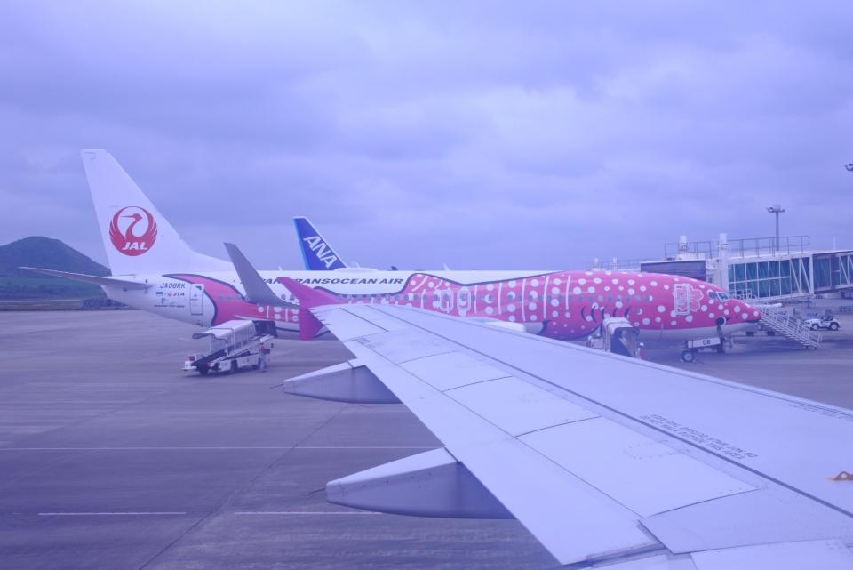
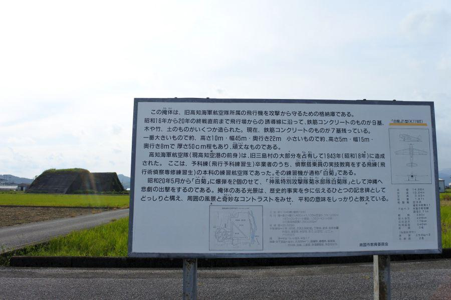

空から見る高知県 < 高知県西部・中部 >

飛行機に搭乗する時の楽しみ 「空から●●を見る」
これから一緒に 空の旅などいかがでしょう。
空海でさえたどり着けなかった場所
竜串(たつくし) ・ 見残し(みのこし)
沖縄から飛んで、鹿児島・宮崎を見た後。
次は四国だ！
と、目に入ったのがこちら。足摺西海岸の景勝地・竜串に、そこから延びる千尋岬(ちひろみさき)の先にあるのが見残し。名前の由来は 四国中を回った空海さんでさえも、険しさのあまり到達することができず、見ることができなかったことに因む。
関連記事
2017,10/22 白い砂・青い海。四国にある日本で一番遠い海 ＜柏島 / 高知県＞
ウミガメが産卵に訪れる浜
下ノ加江(しものかえ)
左側、下ノ加江川の河口に位置する下ノ加江集落。お遍路さんが第38番金剛福寺、または第39番延光寺へ向かう道すがらにある集落。
河口右岸に位置する下ノ加江海岸は、ウミガメが産卵に上陸する、きれいな砂浜です。
最後の清流
四万十川河口
言わずと知れた 「最後の清流」
かつては河口の下田(左岸) から 初崎(右岸) へ渡し舟が就航していましたが、現在は廃止されています。
"土佐の小京都" こと、中村の城下町は河口から約9km遡ったところ。写真中央付近です。
長宗我部の忘れ形見...
弓なりの長い浜は 入野松原(いりのまつばら) と 井の岬(いのみさき)
延長4kmにもなる美しい砂浜には、戦国時代の終わり頃の天正年間(1673 - 1592)に 長宗我部元親の老臣・谷忠澄(たにただずみ)によって松が植林された。
昭和3年(1928)には国の名勝指定を受けている。しかしながら戦時中には資材調達と松根油採取目的で、伐採の軍命が下ったこともあった。
現在 入野松原は "土佐西南大規模公園・大方" を構成する浜となっている。本当に大きな公園！
塩タタキで有名な...
佐賀漁港(さがぎょこう)
漁港の出入口にある鹿島(かしま)が目印。この岩の存在が 荒波打ち付ける太平洋から佐賀の人々の生活をずっと守ってきたことでしょう。窪川・高知方面に向かうにつれ、平地が少なくなり 集落が小さいものとなるのがわかります。
土佐の佐賀はキノコ栽培と、日本有数の鰹一本釣りの街。
"塩タタキ" で一躍有名になった一本釣り船団・明神丸は、佐賀漁港から出港します。
高知・幡多文化の境界
高南台地(こうなんだいち)
標高200mの大地の上に広がる窪川(現・四万十町)の街。町内を四万十川が流れることから水資源が豊富な事、標高の高さから寒暖差が大きく それらの条件が稲作に適していることから、高知県随一の米どころとなっています。
窪川を境に 西は幡多郡(はたぐん)、窪川を含む東は高岡郡(たかおかぐん) となり、この街が 高知文化 / 幡多文化の境界になっている。幡多地方(高知県西南地域)は高知県は元より 隣県の愛媛県、向かいの大分県の三国がミックスされたような文化となっており、例えばお醤油の味(→甘い)でそれを知ることができる。
横浪三里と清流の旅の終点

横浪半島(よこなみはんとう) と 仁淀川河口(によどがわかこう)
四国八十八ヶ所・第36番青龍寺(しょうりゅうじ)があるのが、横浪半島の付け根付近。以前は橋が架かっていなかったことから、お遍路さんは 渡し舟で対岸に渡り 札所を参拝。そこから37番に向かうにしても道が無かったため、浦ノ内湾に就航していた舟に乗って移動するのが一般的だったようです。
日本一の清流と名高い仁淀川。愛媛県から流れてくる清らかな水は、ここで太平洋に交わります。
高知の城下に来てみいや...
高知の城下に浦戸湾、桂浜、高知龍馬空港etc...
月の名所と龍馬の銅像で有名な桂浜は、浦戸湾の入口にあります。近い将来発生すると言われている南海地震・東南海地震においては この湾を津波が遡上し、奥まった場所にある高知市街に到達、大きな被害が出ると予測されています。
右端に見えるのは高知龍馬空港。前身は海軍高知飛行場。空港周辺には 戦闘機の防空壕である掩体壕(えんたいごう)が残されており、戦時中は夜間特攻 "白菊隊" が飛び立っていった、悲しい歴史を秘める飛行場でもあります。
関連記事

2017,12/7 高知龍馬空港近く、かつての海軍基地の遺構 < 前浜掩体壕群 / 高知県 >

2017,12/13 四国にもあった特攻部隊 < 白菊隊 / 高知・徳島>